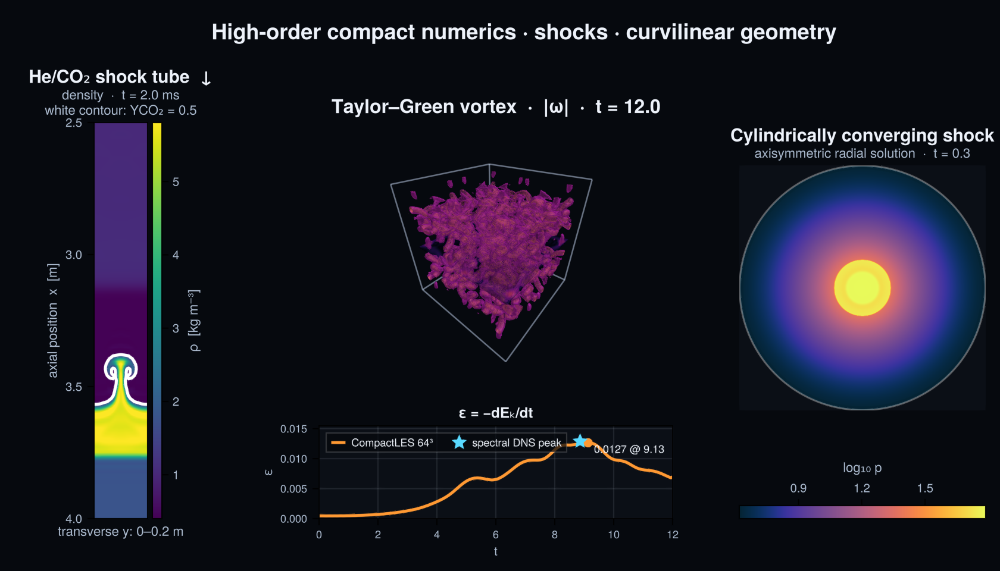

CompactLES.jl
CompactLES is a compressible large-eddy/direct-simulation solver for the multicomponent Navier–Stokes equations. It combines high-order compact finite differences, compact filtering, localized artificial fluid properties, low-storage Runge–Kutta time integration, and distributed MPI line solves.

The frontend separates a physical Problem—EOS, transport, geometry, boundary conditions, sources, and initial state—from Numerics, which contains the grid, algorithms, CFL, and process decomposition. One problem can therefore be studied at several resolutions without rewriting its physics.
Choose a path
- Learn by running a calculation. Begin with Your first CompactLES simulation, a one-dimensional acoustic pulse that builds an
x–tdiagram. - Complete a specific task. Use the how-to guides to Define a problem, Choose boundary conditions, Control and diagnose a run, or Write output and restart.
- Understand the model. Start with Governing equations, then read the explanation of discretization, regularization, thermodynamics, geometry, open boundaries, and parallel algorithms.
- Look up exact behavior. The reference section documents constructors, keywords, return values, and every exported binding.
How the tutorials build
The tutorials are ordered so that each adds one layer to the preceding calculations. Your first CompactLES simulation introduces the state, grid, CFL-controlled time advancement, and output path. The shock tube adds filtering and artificial transport, and the multicomponent example adds thermodynamic closure and species storage. The geometry sequence then starts with a collapsed radial calculation before resolving a full cylinder and, finally, a sphere with an origin and poles.
The tutorials give enough explanation to run and interpret each calculation. For the mathematical development, read Governing equations followed by Spatial and temporal discretization; the later explanation pages deepen the regularization, thermodynamics, and geometry introduced along the way.
Prerequisites and conventions
The manual assumes graduate coursework in fluid mechanics, thermodynamics, vector calculus, and numerical partial differential equations. It does not assume prior knowledge of Lele compact differences, Cook artificial properties, NSCBC, coordinate folds, or distributed banded solves; those are introduced before their solver-specific details.
Inputs may use SI or consistently nondimensional variables. The package does not attach units, so mixing unit systems is not detected automatically.
Scope
The current model has one temperature, no reactions, and constant molecular transport coefficients. Cartesian, cylindrical, and spherical coordinates are available, including regularized axes, origins, and poles. These paths do not all have equal maturity; each explanation page states the relevant evidence and limitations.